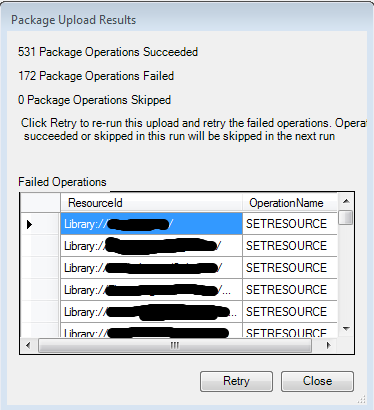

Packaging Data
MapGuide Packages allow you to import and export portions of the MapGuide Server repository to another MapGuide Server repostiory.
It is a very useful way to backup, migrate and deploy data from one MapGuide Server to another.
The MapGuide Server Site Administrator web application allows you to load and create these packages. But has some downsides:
- It is a server-side web application. Loading and retrieving packages requires the package be stored physically on the server's package directory
- Ability to automate such a process is limited.
- Questionable reliability with really large package files.
MapGuide Maestro however, allows you to load and create such packages completely on the client-side.
Creating Packages
There are 2 ways to load a package:
- The Package - Package Folder menu option.
- Right clicking the desired folder in the Site Explorer and choosing the Package Folder option.
The time it takes to create a package is a function of how many resources in total are in the folder to be packaged up.
Loading Packages
There are 2 ways to load a package:
- The Package - Load Package menu option
- Dragging and dropping the package file into the Site Explorer
The time it takes to load a package is a function of how large the package is. Once loaded, the Site Explorer will refresh itself. When loading a package, you will be presented with the following options:

Package loading options
Each option is described below.
Transactional Loading
Transactional loading is the default loading mechanism. There is no way to measure loading progress, but the operation itself will either wholly succeed or wholly fail (hence the transactional nature of this operation). This operation is safe to use on small to moderately sized package files, and does not affect the integrity of the repository regardless of the result.
Non-Transactional Loading
Non-transactional loading is a new loading mechanism designed to work around the limitations of the default loading mechanism:
- The inability to measure/track progress
- More reliability with loading large package files (several hundred MBs in size)
With the non-transaction loading approach, progress can be measured:

Non-transactional packaging progress
Should any package operations fail, they are logged and presented to the user at the end of the operation.

Failed Non-transactional packaging operations
At this point you can retry these failed operations, and only the failed operations will be re-executed. Otherwise you can close the dialog to complete this package loading operation.
Note
Because Maestro communicates to the MapGuide Server over http, loading large packages (over several hundred MBs) can be problematic. As such using the Site Administrator is recommended. Otherwise, an data moving strategy is required (eg. Repository backup/restore or use of aliases instead of embedded data files)
Editing Packages
Maestro also includes a package editing tool. To edit a package, select Package - Package Editor from the menu. Select the package file to edit, and the Package Editor dialog will be displayed.

Package Editor Dialog
The Package Editor shows the layout of the Package and the resources that would be created if this package were to be loaded.
Package Editing Options
To create a new folder, select New Folder to create a new folder at the selected folder node. To edit the name of this folder, click the node label until an edit box appears.
To create a new resource to be loaded, select New Resource to create a new resource entry at the selected resource node. You will get a dialog to specify the location of the resource content file

Add Resource Dialog
To delete a folder or resource, select the node and click Delete to delete the selected resource or folder node.
To add resource data for a resource entyr, select the resource node and use the Data Files user interface to add your resource data files.
Once you have made your changes, click OK to save this to a new package. Clicking Cancel will discard all modifications